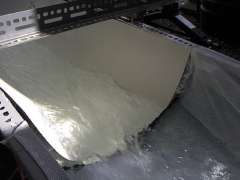
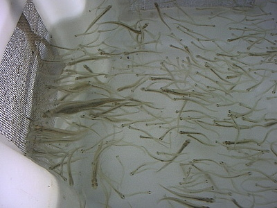

釣行日誌 ＮＺ編 「一期一会の旅：A Sentimental Journey」
ジャックさん宅を訪問
11/27(TUE)-3
ティラウの町のガソリンスタンドで給油するついでに、そこのトイレで釣り用の服を一張羅の半袖シャツとズボンに着替えてから、SH1を北上する。タマヘレ地区に入るには高速道路からランプを降りて右折し立体交差をくぐる必要があり、ここでも地図を頼りにノロノロと進む。郊外の広い住宅地に入り、飛び飛びの表札を頼りに家を探す。思っていたよりはかなり奥まったところに目的の番地を見つけ、車を乗り入れる。ガレージ前に車を停めると時刻は午後５時25分。ドアをノックすると、懐かしいジャックさんの顔が現れた。
「こんにちは！お久しぶりですぅ！」
「よく来てくれた。さぁ入って入って！」
がっしりと握手した後に玄関に迎え入れられると、奥の方から
「言ったとおりでしょ、日本人は時間にピッタリなのよ！」
と、スーザンさんの声がして、夫人が出てみえた。
「初めまして。ゴウと申します。ジャックさんには大学時代に大変お世話になりまして。」
「初めまして。スーザンよ。」
こちらも握手を交わし、皆でダイニングテーブルにつく。
ジャックさん、Dr. Jacques Boubee はニュージーランド国営の会社である NIWA という研究機関で、長年にわたり淡水魚、主にウナギの遡上や降海についての研究をされてきた方で、僕がワイカト大学の大学院でホワイトベイトの魚道に関する研究をした際、大学とNIWAとの共同研究となり、資金や設備、資材の供給などで多大な協力をしていただいたのであった。大学近くの実験施設を借りて、そこの敷地内にポンプによる水循環式の水路を作り、生きたまま捕獲してきた1000尾を越えるホワイトベイトを放して遊泳速度や上端への到達割合などを計測した後に再び捕獲場所まで持って行って再放流するという、かなり手間のかかる実験を監修してもらったのだ。


現在、ジャックさんは NIWA を定年退職されて、自分でコンサルティング会社を立ち上げ、主に電力会社からの委託を受けて、ダムの直下まで遡上して来たウナギの稚魚を捕獲してカウントし、ダムの上流に再放流するというプロジェクトを行っているそうだ。昨年の旅行計画を立てている時には、ちょうどその期間中にジャックさんが、日本でも有名な北島南部の山奥にある湖に調査に行く計画があるので、君も行って釣ってみるかね？ とのお誘いを受けていたのだったが、残念ながら実現はしなかった。
今夜のごちそうはチキンとクマラ（サツマイモ）などの煮込み、そしてサラダである。僕は例によってジュースをいただき、夫妻はワインを召し上がった。賑やかな話題はお互いの近況から政治談義に及び、ジャックさんは
「日本では原発が全て稼働停止になったのに、その間に電力不足には陥らなかったのかね？」
と訊ねてきたので、
「それが何とかしのげたんですよ。でも政府や電力会社は再稼働をしたがっていますけどね。」
と答えた。続いて互いの国の政治家たちの話題となり、
「ニュージーランドの女性首相だったかオーストラリアの女性議員が国会議事堂内で赤ちゃんに授乳したと聞きましたが。男尊女卑の日本の社会では考えられないですよ。」
「ええ、でも今のニュージーランドの首相は少し経験不足じゃないかしら....」
とスーザンさんはジャシンダ・アーダン首相の実力にいささかの懸念を抱いているようだった。
「ウチとこの首相もイマイチでしょうかねぇ....」
などと話題は尽きなかった。
「それにしてもゴウ、日本へ帰ってからだいぶ経つのによくまだそれだけ英語が喋れるなぁ！」
と、ジャックさんが誉めてくれた。
「いやぁ、南島の人たちが話し好きなのと、テレビ映画２本でだいぶ勘が戻りました。書く方は全くダメですが。」
さすがに込み入った政治の話ではウロウロだったが、何とか会話は出来るように勘が戻っていた。
豪華なディナーが一段落して、デザートのアイスクリームが出された。僕も手土産の絵葉書「前田真三撮影：奥三河」と、ホキティカのブリントさんにも差し上げた魚の名前の手ぬぐいをジャックさんに、スーザンさんには桜模様の手ぬぐいをプレゼントした。２人とも大いに感謝してくれて、僕は嬉しかった。ジャックさんも、ブリントさん同様、日本の Kanji-Characters の多さに驚いていた。これがご専門の 鰻：Eel - Unagi という文字ですよと教えてあげると、
「これは素晴らしい！仕事机の前に貼っておくよ。」
と嬉しそうに笑ってくれた。
奥さんのスーザンさんは昔、群馬県の桐生市の高校で英語のアシスタントティーチャーをしていたそうで、その時の校長先生から贈られたという渡良瀬川の風景写真を見せてくれた。雨後の増水に霞む流れに鮎師が長竿を出している、幻想的な光景であった。これは私のとてもお気に入りの写真なの、と夫人が話してくれた。
さすがに北島ハミルトンの郊外は日暮れが早く、午後８時半には薄暗くなってきた。そろそろおいとましなければ....と思っていたのだが、話は尽きず、結局９時を回ったところで、本日のご招待へのお礼を述べて席を立った。夫妻が表まで出て見送ってくれ、慣れない上に夜道だから気を付けて行きなさいねと声を掛けてくれた。
「今夜は本当にありがとうございました！またお会いしましょう！」
「元気でな、ゴウ！」
ガレージの前でゆっくり転回し、ドライブウェイへと進み出す。
大林さん宅を目指してSH1を北上し、ハミルトン市内に入ってしばらく進むと、どうも見慣れない場所に出た。道に迷ったようだ。これはイカン！と、もう９時半を過ぎていたが大林さんのご主人に電話すると、
「ああ、迷ったんだね。近くにどんな店や建物があるの？」
「ええっと、○○という大きな家具屋が向かいにあって、今は△△というガソリンスタンドの脇に停めてます。」
「ははぁ、川向こうのテ・ラパロードまで行っちゃったんだな。少し戻ると大きな食品スーパーがあるからそこの駐車場で待ってて。今から迎えに行くから。」
本来であれば、ワイレレ・ドライブという中央分離帯のある広い道路を北に進んで、とある大きなロータリーで右に入らなければいけなかったのだが、標識を見落として直進し、ワイカト川を渡って西岸の市街地まで来てしまったようだ。滞在２日目にしてえらいドジを踏んでしまい、反省しながら人気の無い広大な夜の駐車場にて大林さんの赤いホールデンが来るのを待つ。携帯電話を買っておいて本当に助かったと思った。10分ほど孤独に待っていると、真っ赤なピックアップトラックがパーキングに滑り込んできた。大きく両手を振って出迎える。
「どうもまことにすみませんですっ！」
「いいよいいよ。さぁはぐれずに後ろを付いて来て。」
ご親切にも奥さんまで一緒に来てくれた。夜更けで空いた道路を飛ばすホールデンを追って、信号ではぐれないようピッタリ後を付いて、ようやく大林家までたどり着いた。
「ありがとうございました！スミマセン！」
「さて、もう遅いから今夜は寝ようか。」
大林さんがニコニコと声を掛けてくれた。ひたすら恐縮至極であった。
シャワーを浴びて、大きなベッドに潜り込んで今夜もゆっくりと眠った。
釣行日誌ＮＺ編 目次へ
サイトマップ
ホームへ
お問い合わせ